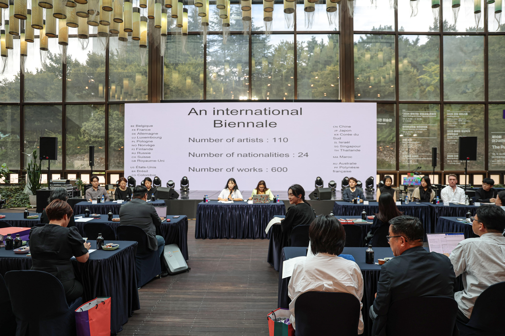
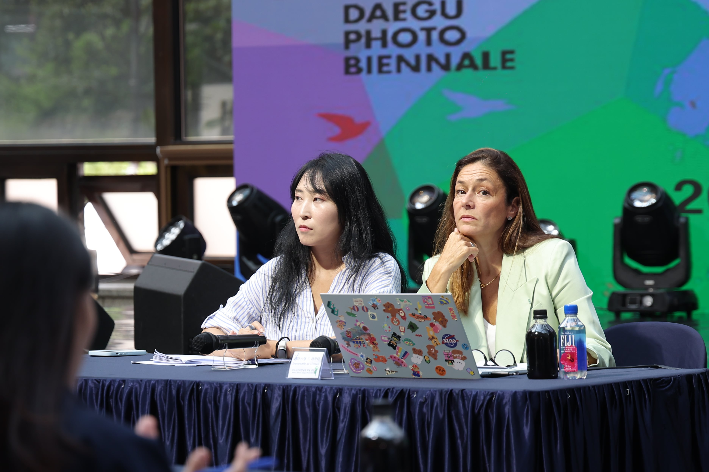
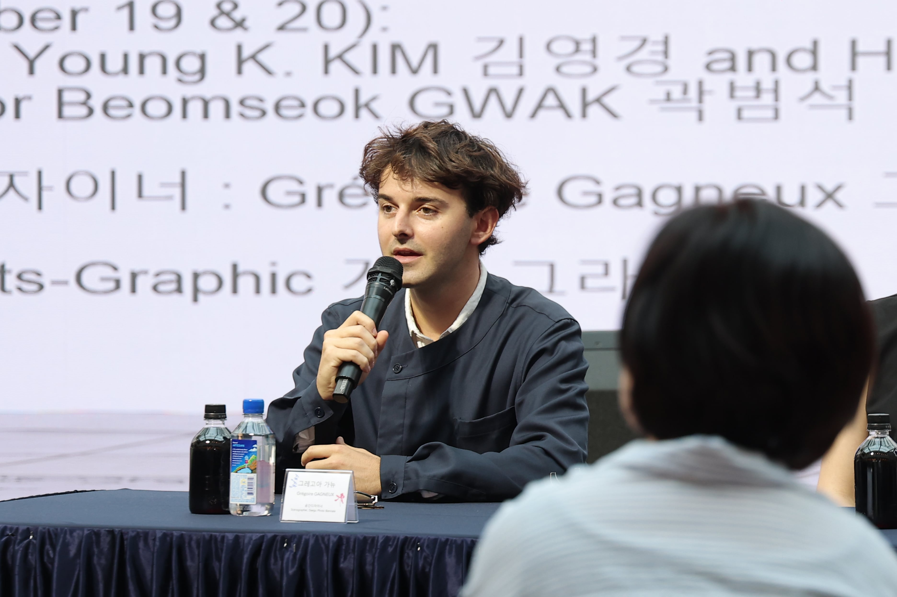
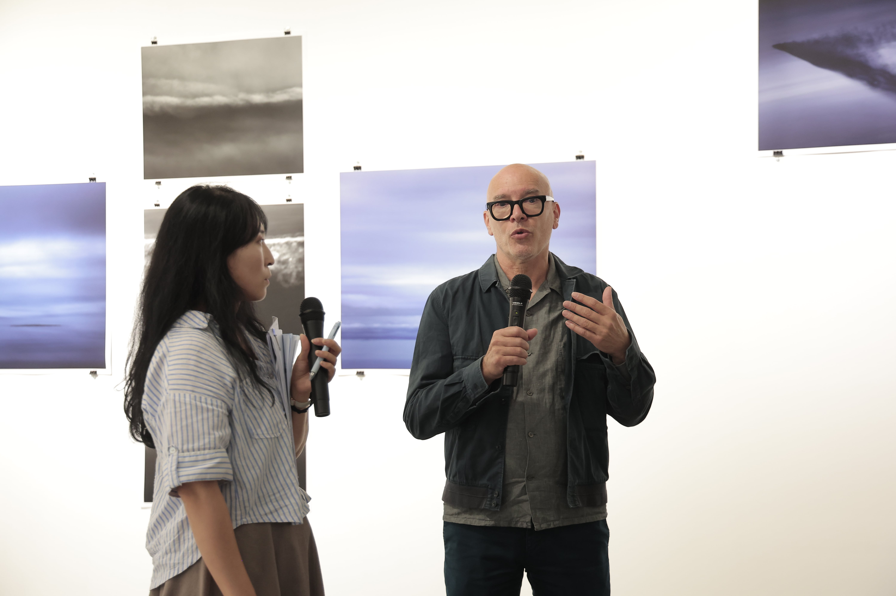
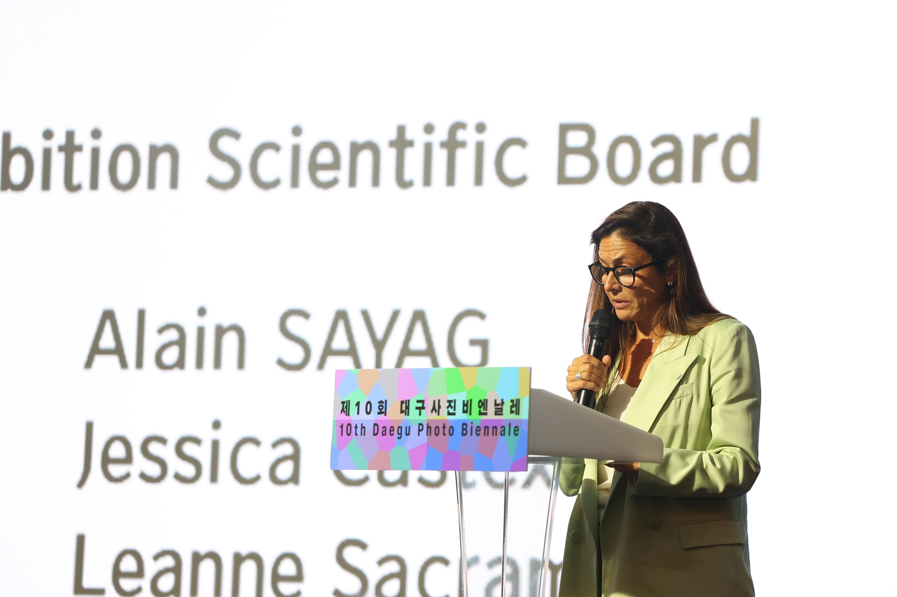
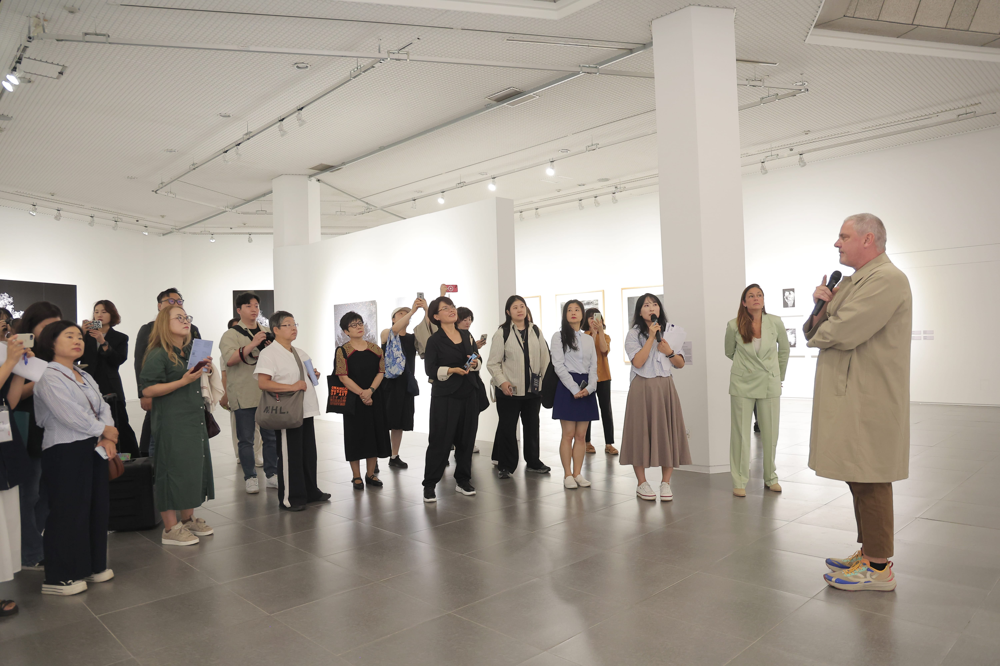
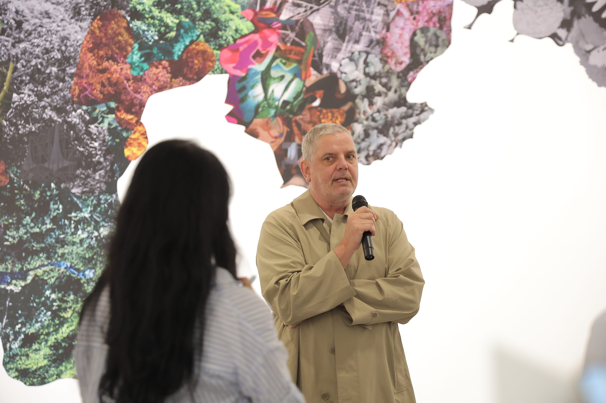
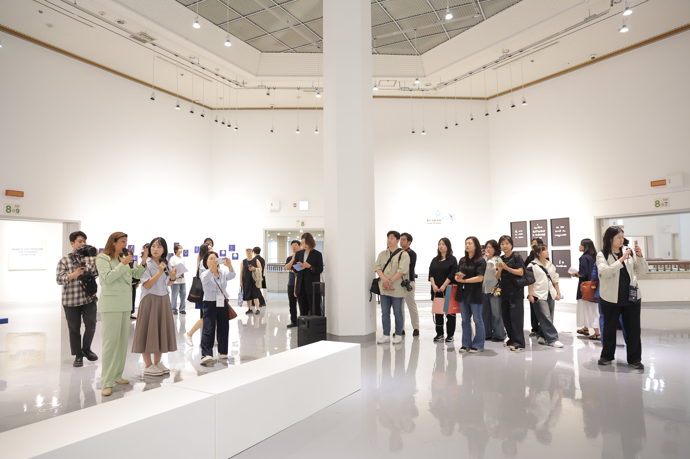
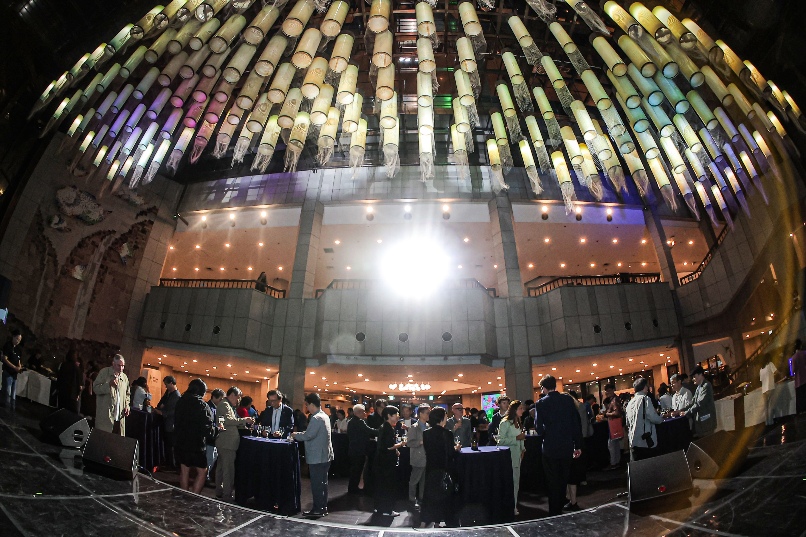
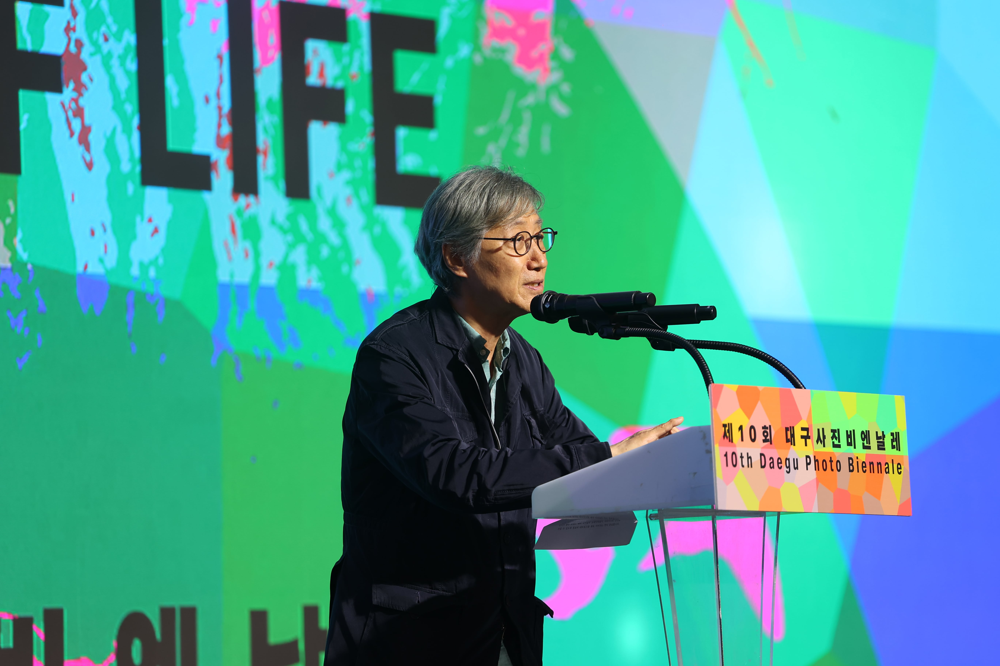

대구 사진 비엔날레: 생명의 울림

프로젝트 : 2025 대구사진비엔날레 심포지엄
과업기간 : 2025년 2월 - 11월
과업 : 전시 및 프로그램 기획
이 근본적인 질문은 오랜 시간 동안 사상가, 예술가, 과학자들에 의해 끊임없이 탐구되어 왔다. 생명의 정의는 단순한 생물학적 범위를 넘어, 인간과 모든 생명체의 관계를 포함하는 깊은 철학적 탐구로 확장되어 왔다.
오늘날 인류는 인간의 활동이 지구 환경과 생태계에 중대한 영향을 미치는 '인류세(Anthropocene)'라는 새로운 지질학적 시대에 직면해 있다. 그러나 이제는 이러한 인간 중심적 시대를 넘어, 모든 생명체가 상호 연결되어 있다는 '공생세(Symbiocene)'라는 새로운 생태적 인식의 전환이 요구된다.
제10회 대구사진비엔날레는 자연과 인간의 관계, 인간의 우주적 위치, 가시적 세계와 비가시적 세계, 인간과 비인간의 경계를 탐구한다. 이번 비엔날레는 다양한 예술적 실천을 통해 생명의 다양성, 취약성, 회복력에 대한 질문을 제기하며, 동시대 사회가 직면한 생명의 의미를 비판적 시각에서 성찰할 수 있는 공간을 제시한다.








